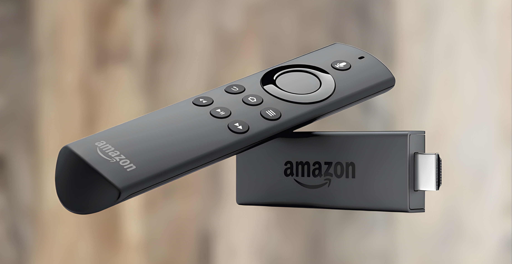
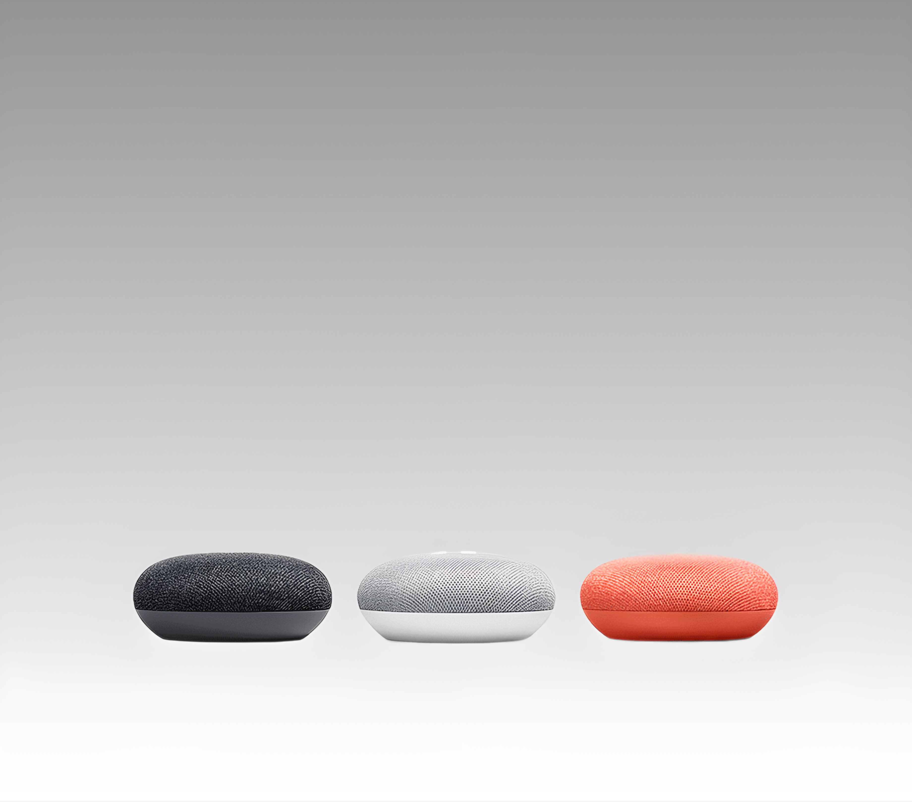
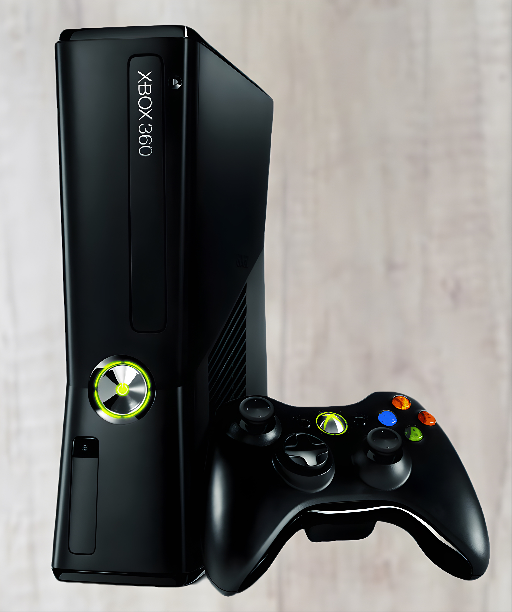
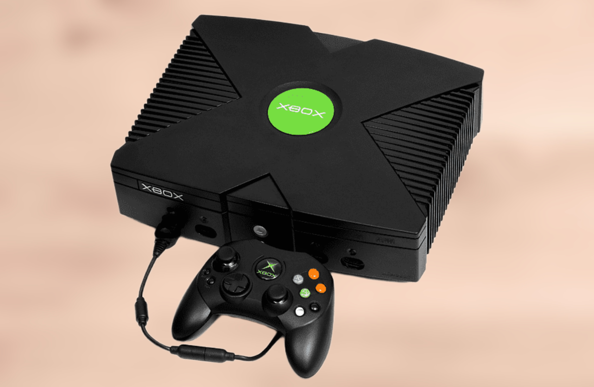
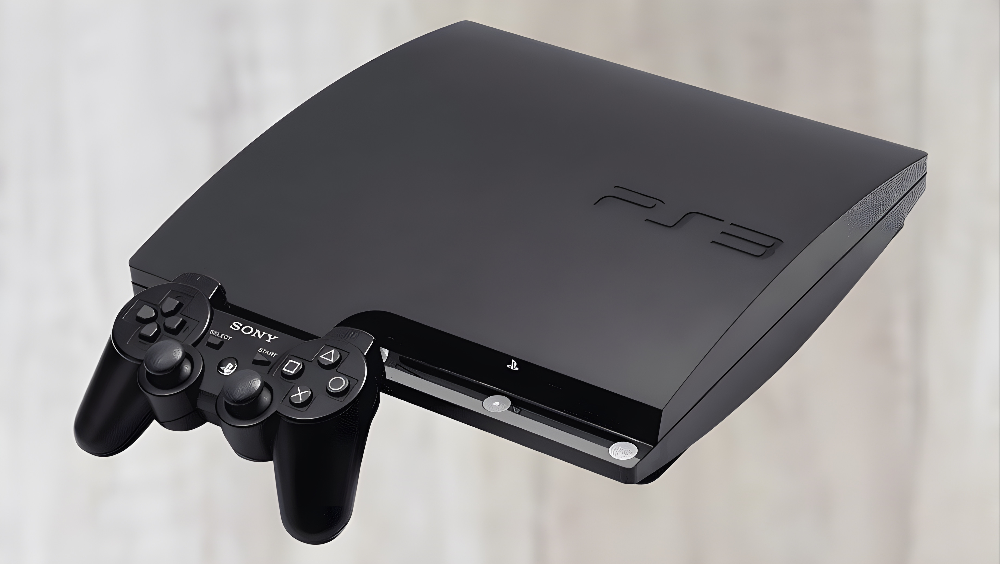
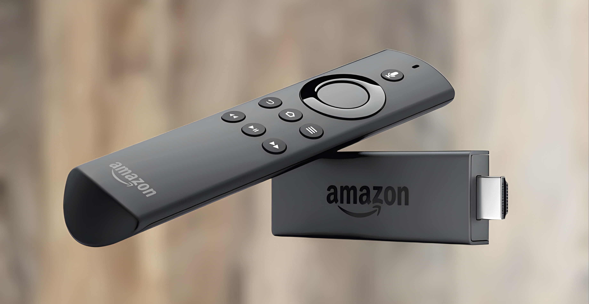
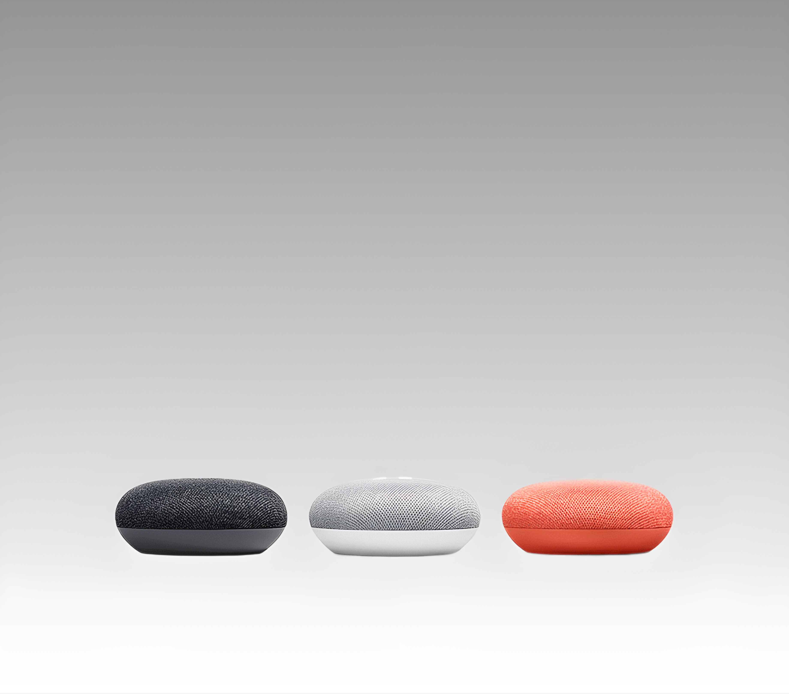
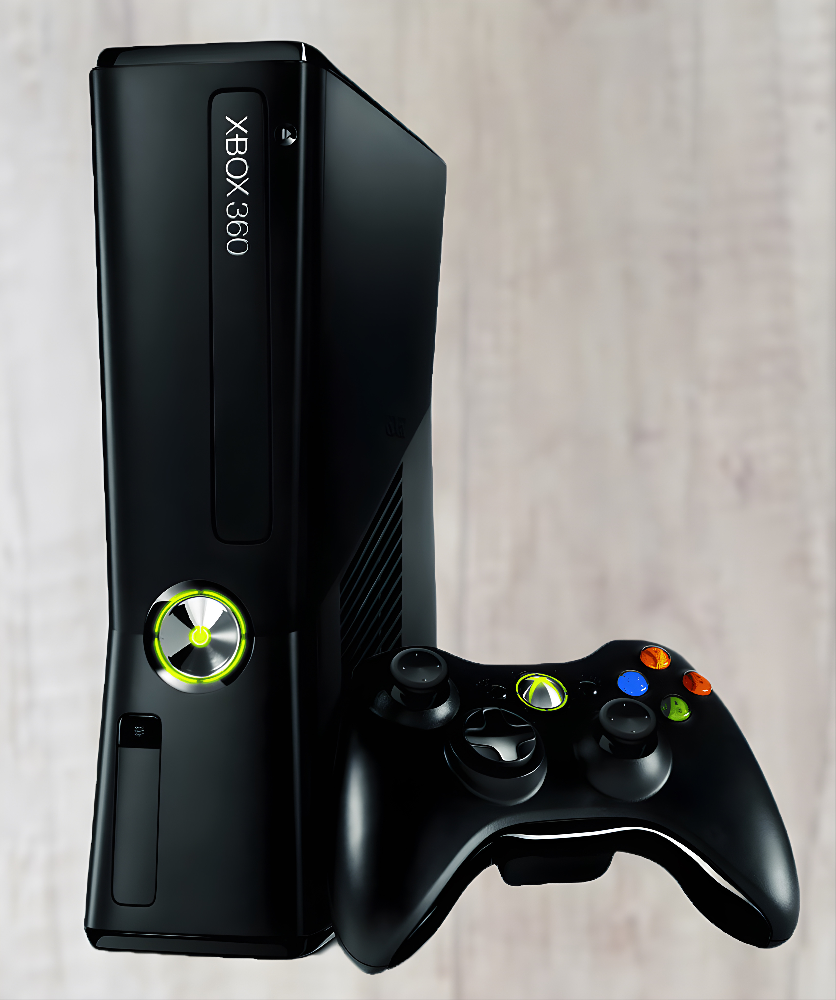
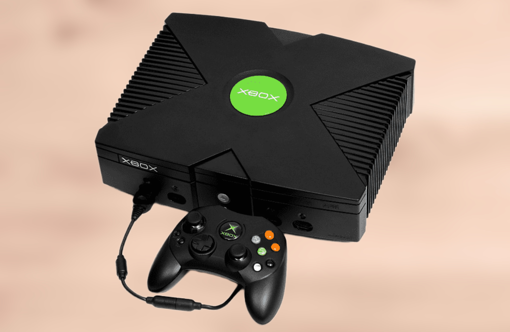
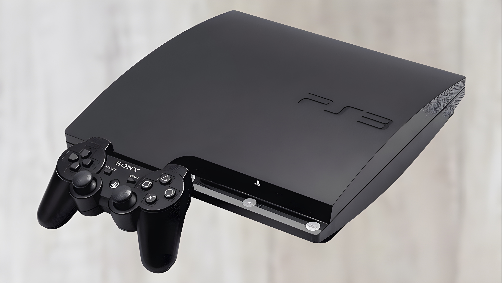

The first video game was created in 1958 by William Higinbotham. The PlayStation 2 is the best-selling video game console of all time. The Game Boy was the first handheld console to use game cartridges. Nintendo was originally a playing card company before it ventured into video games The Konami Code is a famous cheat code that appears in many video games The longest recorded game of Monopoly lasted for 70 straight days Alexa plays Party Games like 'Would You Rather' or 'Truth or Dare' can be played in a group Animal Sounds asks you to guess the animal based on the sound Alexa plays Alexa plays Coloring Game encourages kids to draw or color a scene that Alexa describes Alexa plays Simon Says, a memory game where you have to remember and repeat a sequence Alexa plays Memory Match, that requires you to remember and repeat a list of items in order. ELDERLY FRIENDLY Alexa plays Breathing Exercises guide you through breathing techniques for relaxation Alexa plays Mindfulness Challenges offer short quizzes to increase your mindfulness and awareness Alexa plays Word Association involves saying a word and Alexa responds with an associated word Alexa plays Interactive Stories are text-based adventures where your choices affect the outcome Alexa plays Mystery and Detective Games let you solve mysteries by listening to clues Alexa plays Chess allows you to play chess with Alexa using standard chess notation Alexa plays Battleship is a voice-activated version of the classic board game Alexa plays Math Challenges involve solving math problems or answering math-related questions Alexa plays Language Learning games help you learn new words or phrases in a different language The PS3 was one of the first gaming consoles to include a Blu-ray player The best-selling video game console of all time is the PlayStation 2 The Game Boy was the first successful handheld emulator, launched in 1989 The Echo Dot can learn new skills which are essentially apps that extend its functionality The Xbox was named as a reference to the graphical API, DirectX The Xbox 360 is one of the best multimedia systems, from controller free gaming to playing DVDs The Firestick 4K offers a wide range of apps, including popular streaming services like Netflix and HuluThe first commercially successful video game, Pong, was released by Atari in 1972.Super Mario Bros., originally released for the NES in 1985, is one of the best-selling video games of all time.The Legend of Zelda series was principally inspired by creator Shigeru Miyamoto's explorations as a young boy in the hillsides surrounding his childhood home in Japan.Minecraft, first released in 2011, is the best-selling video game of all time, with over 200 million copies sold across all platforms.The character of Sonic the Hedgehog was designed to have broad international appeal, and his early designs were inspired by Michael Jackson and Bill Clinton's "can-do" attitude.The highest score ever achieved in Pac-Man is 3,333,360 points, a perfect game achieved by less than a dozen people since the game's release in 1980.Lara Croft from Tomb Raider was originally named Laura Cruz, and her character underwent significant development before becoming the iconic adventurer known today.Final Fantasy got its name from being what was expected to be Square's last game, due to financial troubles at the time of its development.The Pokémon franchise is the highest-grossing media franchise of all time, surpassing Star Wars, Marvel, and Mickey Mouse.The first Easter egg in a video game was in Adventure for the Atari 2600, where the creator, Warren Robinett, hid his name in a secret room.World of Warcraft, released in 2004, holds the Guinness World Record for the most popular MMORPG by subscribers.In 1998, The Legend of Zelda: Ocarina of Time was one of the first games to feature a lock-on combat system, revolutionizing action-adventure gameplay.The original concept for the game that would become Doom involved a time-traveling fight against demons, inspired by the movie Aliens.Street Fighter II, released in 1991, is credited with establishing many of the conventions of the one-on-one fighting genre.The voices of the ghosts in Pac-Man are meant to represent their personalities: "Blinky" (red) chases Pac-Man, "Pinky" (pink) tries to position itself in a set way, "Inky" (blue) is unpredictable, and "Clyde" (orange) moves randomly.Tetris was invented by a Soviet software engineer, Alexey Pajitnov, in 1984.The best-selling handheld game console of all time is the Nintendo DS.The original name of Sonic the Hedgehog was Mr. Needlemouse.Pac-Man has inspired over 30 officially licensed game spin-offs.The longest videogame marathon on Minecraft lasted more than 35 hours.The first video game to feature a soundtrack was Space Invaders in 1978.Donkey Kong was Mario's first opponent, back when Mario was known as Jumpman.The highest-grossing entertainment release of all time is not a movie but a video game: Grand Theft Auto V.World of Warcraft was recognized by the Guinness World Records as the most popular MMORPG.League of Legends World Championship finals have drawn larger audiences than the NBA Finals.The concept of the "Easter egg" in games started with Adventure for the Atari 2600, allowing players to discover a hidden message.Mass Effect 2 holds the record for the most voice acting in a single video game, with over 31,000 lines.The Witcher 3: Wild Hunt's world is 20% bigger than Skyrim's.The creator of the Game Boy, Gunpei Yokoi, was originally a janitor at Nintendo.In the game Portal, the cake is a lie.The first video game in space was Starcraft, played by astronaut Daniel Barry on the Space Shuttle mission STS-96 in 1999.The voice actor for Mario, Charles Martinet, has voiced the character in over 100 games.Before settling on the iconic green color, Xbox's original color was going to be orange.In Assassin's Creed, the animus interface elements were originally blue, changed to gold to avoid similarities with The Matrix.The original Doom game from 1993 has been ported to run on more platforms than any other game.
 








